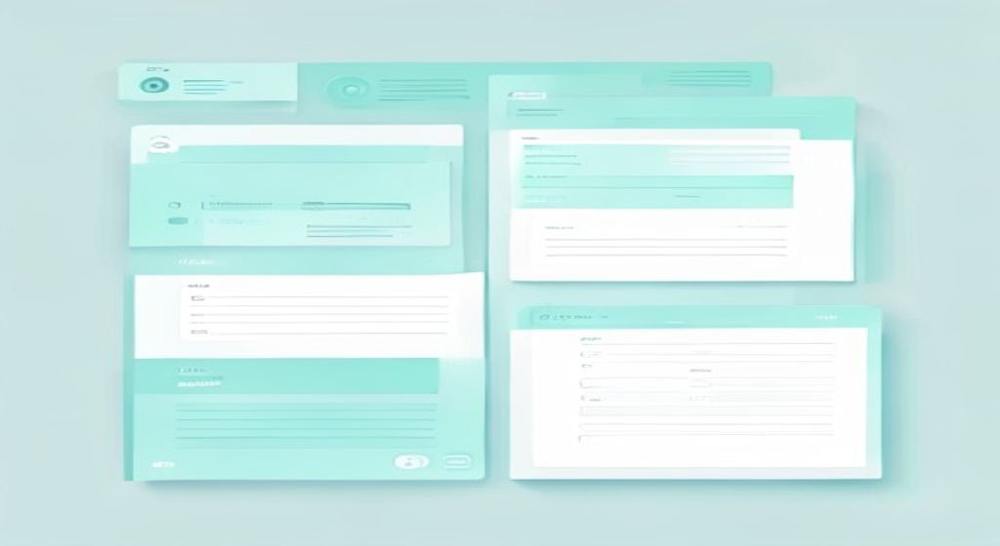
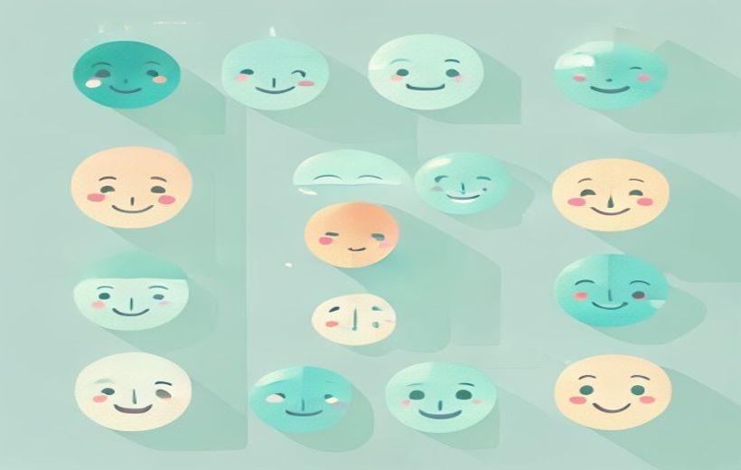
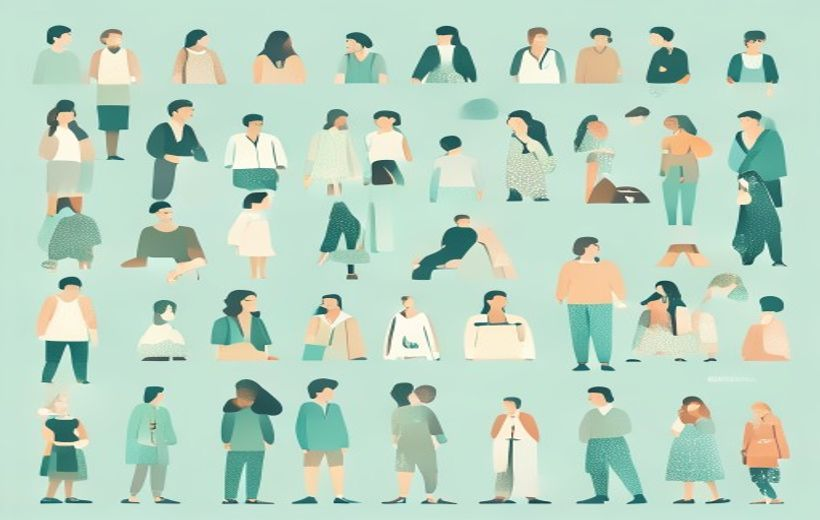

La encuesta dentro del proceso de investigación comercial, cómo elegir el canal (el árbol de decisión) y los tipos de preguntas del cuestionario. Estos tres bloques son los que de verdad caen — el resto es contexto.

Una encuesta no es "ponerse a preguntar": es un proceso ordenado de principio a fin.
La encuesta es la fase de recogida de datos dentro de un proceso más grande; para que funcione hay que elegir bien el canal (según objetivo, recursos, público y tiempo) y diseñar bien las preguntas (cada tipo sirve para algo distinto).
🧠 Los conceptos
Despliega cada tarjeta, léela con calma y márcala como entendida. La barra de arriba irá subiendo. Las que tienen CAE son las que el examen pregunta seguro.
La encuesta no va sola: es una pieza dentro de un proceso de 5 fases encadenadas. Cada fase alimenta a la siguiente, y si una falla, las demás se resienten. La encuesta es la fase de aplicación / recogida de datos.
Figura 1 — El flujo completo (de izquierda a derecha):
¿Qué hace cada fase y por qué importa para la calidad y utilidad de la información?
| Fase | Qué se hace |
|---|---|
| 1. Definición del problema | Decidir qué queremos saber. Si esto está mal, todo lo demás sobra. |
| 2. Diseño del cuestionario | Convertir esa duda en preguntas concretas (el "corazón" de la encuesta). |
| 3. Aplicación de la encuesta | Recoger los datos reales preguntando a la muestra. Es la encuesta en sí. |
| 4. Análisis de datos | Depurar, codificar y calcular: convertir respuestas en números útiles. |
| 5. Presentación de resultados | Comunicar los hallazgos para que la empresa tome decisiones. |
El canal es por dónde se aplica la encuesta. Hay cuatro, cada uno con su ventaja y su pega, y para decidir cuál usar el tema propone un árbol de decisión que elige precisamente entre ellos.
Los 4 canales: presencial, telefónica, postal, online (Tabla 1)
Esta es la Tabla 1 tal cual del tema — apréndete la ventaja, la limitación y el ejemplo de cada uno:
| Canal | Ventaja | Limitación | Ejemplo aplicado |
|---|---|---|---|
| Presencial (cara a cara) | Alta tasa de respuesta; observación directa | Coste y logística elevados | Encuesta en supermercado sobre la atención en caja |
| Telefónica | Rapidez en la recogida de datos | Rechazo por saturación de llamadas | Banco que llama tras conceder un crédito |
| Postal | Alcance geográfico amplio | Baja tasa de respuesta | Encuesta vecinal sobre seguridad ciudadana |
| Online (la más usada hoy) | Bajo coste; segmentación precisa | Sesgos de acceso; fatiga digital | Encuesta en la app de transporte urbano |
Árbol de decisión para elegir el canal (Figura 2)
¿Cómo elijo entre esos cuatro canales? El tema lo resuelve con un árbol de decisión: 4 preguntas en cascada que te van llevando hasta el canal más adecuado. Hazte las preguntas en orden:

Cada tipo de pregunta tiene su función: ninguna es "la mejor", se combinan.
Esta es la Tabla 3 del tema, el bloque estrella del examen. Para cada tipo memoriza: características → ventaja → limitación → ejemplo.
| Tipo | Características | Ventaja | Limitación | Ejemplo aplicado |
|---|---|---|---|---|
| Abiertas | Respuesta libre, con sus propias palabras | Riqueza y detalle | Difíciles de analizar | "¿Qué factores influyen al elegir una bebida en la universidad?" |
| Cerradas dicotómicas | Solo 2 opciones excluyentes (Sí / No) | Facilidad de análisis | Información limitada | "¿Ha comprado online en los últimos 3 meses?" Sí / No |
| Cerradas opción múltiple | Varias opciones de respuesta | Segmenta preferencias | Puede condicionar la respuesta | Atributos valorados en un móvil (precio, diseño, durabilidad…) |
| Escala (Likert, dif. semántico, frecuencia) | Miden la intensidad de una opinión | Datos comparables y cuantificables | Requieren diseño cuidadoso | Grado de acuerdo con "el servicio es rápido" (1 a 5) |
| Filtro | Determinan si procede continuar | Evitan respuestas irrelevantes | Pueden excluir casos interesantes | "¿Ha comprado online en los últimos 6 meses?" |
| Clasificación | Sociodemográficas, van al final | Permiten análisis por perfiles | Invasivas si van al inicio | Edad, género, nivel educativo |
| Control | Verifican la coherencia de respuestas | Garantizan calidad de los datos | Generan rechazo si son obvias | Frecuencia de compra vs. cantidad mensual declarada |
El cuestionario es el corazón de la encuesta: traduce los objetivos en preguntas. Para que sea bueno debe cumplir tres principios:
Se organiza en 3 bloques: introducción → preguntas centrales → clasificación sociodemográfica. Y antes de lanzarlo se hace un pretest (prueba con un grupito pequeño) para cazar preguntas mal formuladas.

Muestra: estudiar a unos pocos bien elegidos para conocer a toda la población.
Dos escalas de actitud que conviene reconocer (caen como tipo de pregunta "de escala"):
Tras recoger los datos, el procesamiento sigue 4 pasos:
🃏 Flashcards
Toca cada tarjeta para girarla. Tapa la definición con la mano y comprueba si te la sabes.
✅ Test rápido
6 preguntas tipo examen. Elige una opción y te corrige al momento con la explicación.
⭐ Preguntas del final de la presentación
La presentación del Tema 6 no incluye diapositiva de autoevaluación formal. Se ofrecen 3 preguntas teórico-prácticas (las de 2 puntos) basadas en los contenidos evaluables del examen, resueltas desde la fuente ESIC. (preguntas de práctica)
Canal: ONLINE (encuesta digital integrada en la app). Aplicando el árbol de decisión:
Ventaja (Tabla 1): bajo coste y segmentación precisa. Limitación a vigilar: sesgos de acceso y fatiga digital (respuestas apresuradas tras cada trayecto). Es exactamente el ejemplo del tema: la app de transporte urbano tras implantar el pago móvil.
Idea clave: ningún tipo es "el mejor"; la combinación equilibrada (riqueza + comparabilidad + coherencia) es lo que da validez al cuestionario.
Canal: TELEFÓNICO. Según el árbol: el objetivo es un contacto directo y rápido, hay recursos para llamar, el perfil son clientes ya identificados con teléfono, y se quiere rapidez. La ventaja (Tabla 1) es la rapidez en la recogida de datos. Es el ejemplo literal del tema: la entidad bancaria que llama tras conceder un crédito.
Riesgo principal: el rechazo por saturación de llamadas — la tasa de negativa a participar es alta porque la gente está harta de llamadas comerciales.
Encaje en la Figura 1: esta elección de canal y la llamada en sí pertenecen a la fase 3, "aplicación de la encuesta". Antes hubo que definir el problema (medir satisfacción) y diseñar el cuestionario; después vendrán el análisis de datos y la presentación de resultados.